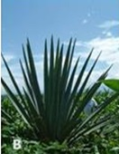

Plastids are prokaryotic in origin and arose by __________. प्लाास्टिड मूल रूप से प्रोोकैरियोटिक होते हैं और __________ द्वाारा उत्पन्न होते हैं।
AEndosymbiosis एंडोसिम्बाायोसिस
BExocytosis एक्सोोसाइटोसिस
CBio-magnification बॉयो-मैग्निफिकेशन
DBio-fortification बॉयो-फोर्टिफिकेशन
EXPLANATIONCorrect Answer: A
The correct answer is A because it matches the definition: Endosymbiosis एंडोसिम्बाायोसिस .
Question 2ID: 2612952Page: 179
The initial step in germination of seeds is the uptake of water and rehydration of the seed tissues by the process of ________. बीजों के अंकुरण में प्राारंभिक चरण पानी का ग्रहण और बीज के ऊतकों का पुनर्जलीकरण ________ की प्रक्रिया द्वाारा होता है।
APassive transport अक्रिय ट्रांांसपोर्ट
BImbibition अंत-शोषण
COsmoregulation ऑस्मोोरग्यूलेशन
DActive transport सक्रिय ट्रांांसपोर्ट
EXPLANATIONCorrect Answer: B
The correct answer is B because it matches the definition: Imbibition अंत-शोषण .
Question 3ID: 2612953Page: 179
_______are cellulose bodies encrusted with calcium carbonate that occur in epidermal cells in some species; the body is attached to the cell wall by a silicified stalk. _______कैल्शियम कार्बोनेट से घिरे सेल्युलोज पिंड हैं जो कुछ प्रजातियों में एपिडर्मल कोशिकाओं में पाए जाते हैं; शरीर एक सिलिकेट डंठल द्वाारा कोशिका भित्ति से जुड़ाा होता है।
The correct answer is B because it matches the definition: Cystoliths सिस्टोोलिथ्स .
Question 4ID: 2612967Page: 180
The exine is itself a layered structure, often differentiated into an outer sculptured________. बहिर्वाह अपने आप में एक परतदार संरचना है, जिसे प्रााय: एक बाहरी तराशे हुए ________ में विभेदित किया जाता है।
AEctexine इक्टेक्सिन
BIntine इंटीने
CEndexine एंडेक्सिन
DNexine नेक्सिन
EXPLANATIONCorrect Answer: A
The correct answer is A because it matches the definition: Ectexine इक्टेक्सिन .
Question 5ID: 2612968Page: 180
____________refer to the combination of various medicinal herbs and their active constituents to gain additional therapeutic efficacy. __________ अतिरिक्त चिकित्सीीय प्रभावकारिता हासिल करने के लिए विभिन्न औषधीय जड़ीी बूटियों और उनके सक्रिय घटकों के संयोजन को संदर्भित करता है।
The correct answer is A because it matches the definition: Polyherbal formulations (PHF) पॉलीहर्बल फॉर्मूलेशन (पीएचएफ) .
Question 6ID: 2612990Page: 180
Which among the following is an extinction threat to a species from the extinction of other species? निम्नलिखित में से कौन सी अन्य प्रजातियों के विलुप्त होने से एक प्रजाति के विलुप्त होने का खतरा है?
AExtinction cascades एक्सटिंक्शन कैसकेड्स
BSpecies invasion स्पेसियस आक्रमण
COverexploitation अत्यधिक दोहन
DThe scale of the human enterprise मानव उद्यम का पैमाना
EXPLANATIONCorrect Answer: A
The correct answer is A because it matches the definition: Extinction cascades एक्सटिंक्शन कैसकेड्स .
Question 7ID: 2613000Page: 181
The process of business activities designed to plan, price, promote and distribute products that satisfy the needs of current or potential customers while achieving the busin objectives is called ________. व्याावसायिक उद्देश्योंों को प्रााप्त करते समय वर्तमान या संभावित ग्रााहकों की जरूरतों को पूरा करने वाले उत्पाादों की योजना, मूल्य, प्रचार और वितरण के लिए डिज़ााइन की गई व्याावसायिक गतिविधियों की प्रक्रिया को _______
AMarketing विपणन
BPackaging पैकेजिंग
CStorage भंडारण
DIrrigation सिंचाई
EXPLANATIONCorrect Answer: A
The correct answer is A because it matches the definition: Marketing विपणन .
Question 8ID: 2613015Page: 181
In plasmids, the process of DNA replication is initiated at distinct sites known as________ and proceeds in both directions along the DNA. प्लाास्मिड में डीएनए (DNA ) प्रतिकृति की प्रक्रिया अलग-अलग जगहों पर शुरू की जाती है जिसे ________ के रूप में जाना जाता है और डीएनए(DNA) के साथ दोनों दिशाओं में आगे बढ़ता है।
AOperon ओपेरोन
BOrigins of replication (ori) ओरिगिन्स ऑफ़ रेप्लिकेशन (Ori)
CMultiple cloning site एकाधिक क्लोोनिंग साइट
DSelectable marker चयन करने योग्य मार्कर
EXPLANATIONCorrect Answer: B
The correct answer is B because it matches the definition: Origins of replication (ori) ओरिगिन्स ऑफ़ रेप्लिकेशन (Ori) .
Question 9ID: 2613031Page: 181
The phenomenon where a plant affects another plant is called _____. _______ वह घटना है जिसमें पौधा दूसरे पौधे को प्रभावित करता है|
AAllelopathy एलेलोपैथी
BCarnivory कर्नीवोरी
CModulation मॉडुलन
DSuperiority सुपरटिओरिटी
EXPLANATIONCorrect Answer: A
The correct answer is A because it matches the definition: Allelopathy एलेलोपैथी .
Question 10ID: 2613040Page: 182
Identify the correct sequence of the HPLC system. एचपीएलसी प्रणाली के सही क्रम की पहचान करें।
AEluent, Pump, Injector, Column Detector, Waste Data system एलुएंट, पंप, इंजेक्टर, कॉलम डिटेक्टर, वेस्ट डेटा सिस्टम
BPump, Injector, Column Detector, Waste Data system, Eluent पंप, इंजेक्टर, कॉलम डिटेक्टर, वेस्ट डेटा सिस्टम, एल्यूएंट
CColumn Detector, Waste Data system, Eluent, Pump, Injector कॉलम डिटेक्टर, वेस्ट डेटा सिस्टम, एल्यूएंट, पंप, इंजेक्टर
DWaste Data system, Eluent, Pump, Injector, Column Detector वेस्ट डेटा सिस्टम, एल्यूएंट, पंप, इंजेक्टर, कॉलम डिटेक्टर
EXPLANATIONCorrect Answer: A
The correct answer is A because it matches the definition: Eluent, Pump, Injector, Column Detector, Waste Data system एलुएंट, पंप, इंजेक्टर, कॉलम डिटेक्टर, वेस्ट डेटा सिस्टम .
Question 11ID: 2613050Page: 182
Adsorption chromatography is well suited for the separation of _________. अधिशोषण क्रोोमैटोग्रााफी _________ के पृथक्करण के लिए उपयुक्त है|
AOrtho–meta–para mixtures ऑर्थो-मेटा-पैरा मिश्रण
BAromatic and aliphatic mixtures सुगंधित और स्निग्ध मिश्रण
CLong chain and short chain fatty acids लंबी श्रृंृंखला और लघु श्रृंृंखला फैटी एसिड
DColloidal and non-colloidal mixtures कोलाइडल और गैर-कोलॉइडल मिश्रण
EXPLANATIONCorrect Answer: A
The correct answer is A because it matches the definition: Ortho–meta–para mixtures ऑर्थो-मेटा-पैरा मिश्रण .
Question 12ID: 2613065Page: 183
________are names that are spelled differently but refer to the same taxon. _______ ऐसे नाम हैं जो अलग-अलग लिखे गए हैं लेकिन एक ही टैक्सन को संदर्भित करते हैं।
ASynonyms समानार्थक शब्द
BHomonyms पदबंध
CAntonyms विलोम शब्द
DAncestors पूर्वज
EXPLANATIONCorrect Answer: A
The correct answer is A because it matches the definition: Synonyms समानार्थक शब्द .
Question 13ID: 2613080Page: 183
Which of the following is not a drug obtained from bark? निम्नलिखित में से कौन सी छाल से प्रााप्त होने वाली औषधि नहीं है?
AQuinine कुनेन की दवा
BCascar कास्कर
CSlippery Elm रपटीला एल्म
DJalap जैलप
EXPLANATIONCorrect Answer: D
The correct answer is D because it matches the definition: Jalap जैलप .
Question 14ID: 2615912Page: 183
Which of the following is untrue about facilitated diffusion? निम्नलिखित में से कौन सा सुगम प्रसार के बारे में असत्य है?
AIt always occurs in the direction opposite to that of electrochemical equilibrium यह हमेशा विद्युत रासायनिक संतुलन के विपरीत दिशा में होता है
BSolutes transported by this mechanism move across membranes much faster than they could if they did not associate with transporter proteins इस तंत्र द्वाारा पहुँचाए गए विलेय झिल्लियों में बहुत तेजी से आगे बढ़ते हैं, किन्तु वे ट्रांांसपोर्टर प्रोोटीन के साथ संबद्ध नहीं होते
CAn important example of facilitated diffusion is the transport of glucose from the blood plasma into cells throughout an animal’s body सुगम प्रसार का एक महत्वपूर्ण उदाहरण रक्त प्लााज्माा से ग्लूकोज का एक जानवर के शरीर में कोशिकाओं में परिवहन है
DThe mechanism requires solutes to bind reversibly with binding sites on the transporter proteins तंत्र को ट्रांांसपोर्टर प्रोोटीन पर बाध्यकारी साइटों के साथ विपरीत रूप से बाँधने के लिए विलेय की आवश्यकता होती है
EXPLANATIONCorrect Answer: A
The correct answer is A because it matches the definition: It always occurs in the direction opposite to that of electrochemical equilibrium यह हमेशा विद्युत रासायनिक संतुलन के विपरीत दिशा में होता है .
Question 15ID: 2615921Page: 184
When each individual is physiologically programmed to reproduce at only a single time in its life, the condition is described as _____. जब प्रत्येक व्यक्ति को अपने जीवन में केवल एक ही बार प्रजनन करने के लिए शारीरिक रूप से प्रोोग्रााम किया जाता है, तो उस स्थिति को _____ के रूप में वर्णित किया जाता है।
ASemelparity सेमलपैरिटी
BParthenocarpy पार्थेनोकार्पी
CEpitoke एपिटोक
DEarly embryony प्राारंभिक भ्रूण
EXPLANATIONCorrect Answer: A
The correct answer is A because it matches the definition: Semelparity सेमलपैरिटी .
Question 16ID: 2615936Page: 184
Particular kinds of movement, usually over long distances and often on a diurnal, seasonal or other return basis is called ____________. विशेष प्रकार की गति, आमतौर पर लंबी दूरी पर और अक्सर दैनिक, मौसमी या अन्य वापसी के आधार पर ____________ कहलाती है।
ATrivial movement तुच्छ मूवमेंट
BMigration प्रवास
CHibernation हाइबरनेशन
DAestivation एस्टिवेशन
EXPLANATIONCorrect Answer: B
The correct answer is B because it matches the definition: Migration प्रवास .
Question 17ID: 2615952Page: 184
Doliolum moves through the water by__________. डोलिओलम जल में __________ द्वाारा गति करता है।
AJet Propulsion जेट प्रणोदन
BBrownian Movement ब्रााउनियन आन्दोोलन
CPeristaltic Movement पेरिस्टााल्टिक आंदोलन
DGliding Movement ग्लााइडिंग आंदोलन
EXPLANATIONCorrect Answer: A
The correct answer is A because it matches the definition: Jet Propulsion जेट प्रणोदन .
Question 18ID: 2615962Page: 185
Some of the visceral afferent fibres come from taste receptors and are classed as__________. कुछ विसेरल अभिवाही रेशे स्वााद ग्रााहियों से आते हैं और इन्हें __________ के रूप में वर्गीकृत किया जाता है।
AVagus nerve वेगस तंत्रिका
BSpinal cord रीढ़ की हड्डीी
CSpecial Visceral Afferent विशेष विसेरल अभिवाही
DCerebral nerve सेरेब्रल तंत्रिका
EXPLANATIONCorrect Answer: C
The correct answer is C because it matches the definition: Special Visceral Afferent विशेष विसेरल अभिवाही .
Question 19ID: 2615972Page: 185
This is a transitional beekeeping system between traditional and frame hive beekeeping. Identify the type of beekeeping. यह पारंपरिक और फ्रेेम हाइव मधुमक्खीी पालन के बीच एक मध्यवर्ती मधुमक्खीी पालन प्रणाली है। मधुमक्खीी पालन के प्रकार को पहचानें।
ATraditional Beekeeping पारंपरिक मधुमक्खीी पालन
BIntermediate Beekeeping मध्यवर्ती मधुमक्खीी पालन
CFrame Beekeeping फ़्रेेम मधुमक्खीी पालन
DModern Beekeeping आधुनिक मधुमक्खीी पालन
EXPLANATIONCorrect Answer: B
The correct answer is B because it matches the definition: Intermediate Beekeeping मध्यवर्ती मधुमक्खीी पालन .
Question 20ID: 2615987Page: 185
In the sagittal section, the tissue of each kidney consists of an outer layer, the cortex, which surrounds an inner body of tissue, called the ______. सेगीटल खंड में, प्रत्येक गुर्दे के ऊतक में एक बाहरी परत, प्रांांतस्था होती है, जो ऊतक के एक आंतरिक शरीर को घेरती है, उसे ______ कहते है।
AMedulla मज्जाा
BBowman’s capsule बोमन का कैप्सूल
CDescending tubule अवरोही नलिका
DAscending tubule आरोही नलिका
EXPLANATIONCorrect Answer: A
The correct answer is A because it matches the definition: Medulla मज्जाा .
Question 21ID: 2616002Page: 186
Which vitamin undergoes a cycle of oxidation and reduction during the formation of active prothrombin, a blood plasma protein essential in blood clot formation? कौन-सा विटामिन सक्रिय प्रोोथ्रोोम्बिन के गठन के दौरान ऑक्सीीकरण और रिडक्शन चक्र से गुजरता है, जो रक्त के थक्केे के गठन में आवश्यक रक्त प्लााज्माा प्रोोटीन है?
Aए
B[Image/Diagram]
CE ई
DK के
EXPLANATIONCorrect Answer: D
The correct answer is D because it matches the definition: K के .
Question 22ID: 2616012Page: 186
Which protein binds to carbohydrates with high affinity, and specificity and is helpful in cell signalling, cell-cell interactions and the adhesion process? कौन-सा प्रोोटीन कार्बोहाइड्रेेट को उच्च समानता और विशिष्टता के साथ बांधता है और सेल सिग्नलिंग, सेल-सेल इंटरैक्शन और आसंजन प्रक्रिया में सहायक होता है?
ALysine लाइसिन
BProline प्रोोलाइन
CLectin लेक्टिन
DLeucine ल्यूसीन
EXPLANATIONCorrect Answer: C
The correct answer is C because it matches the definition: Lectin लेक्टिन .
Question 23ID: 2616022Page: 186
Larval form of hemichordates is ___________. हेमीकोर्डेट का लार्वा रूप ___________ है।
ACaterpillar कैटरपिलर
BNauplius नुप्लियस
CCrinoidia क्रिनोइडिया
DTornaria टोर्नेरिया
EXPLANATIONCorrect Answer: D
The correct answer is D because it matches the definition: Tornaria टोर्नेरिया .
Question 24ID: 2616037Page: 187
In which order, flying mammals whose forelimbs converted into wings are classified? उड़ने वाले स्तनधारियों जिनके अग्रपाद पंखों में परिवर्तित हो गए, को किस क्रम में वर्गीकृत किया गया है?
AChiroptera चिरोप्टेरा
BDermoptera डरमोप्टेरा
CRodentia रोडेंटिया
DEdentata एडेंटाटा
EXPLANATIONCorrect Answer: A
The correct answer is A because it matches the definition: Chiroptera चिरोप्टेरा .
Question 25ID: 2616052Page: 187
___________ refers to large changes in a population's gene pool that often occur over many generations and result in the emergence of new species. ___________ आबादी के जीन पूल में बड़े बदलावों को संदर्भित करता है जो अक्सर कई पीढ़ियों में होता है और परिणामस्वरूप नई प्रजातियों का उदय होता है।
AMicroevolution माइक्रोोइवोल्यूशन
BMacroevolution मैक्रोोइवोल्यूशन
CPopulation pool जनसंख्याा पूल
DDarwinian evolution डार्विनियन विकास
EXPLANATIONCorrect Answer: B
The correct answer is B because it matches the definition: Macroevolution मैक्रोोइवोल्यूशन .
Question 1ID: 2612941Page: 425
Which photosynthetic tissue is located between the two epidermal layers? कौन-सा प्रकाश संश्लेषक ऊतक दो एपिडर्मल परतों के बीच स्थित होता है?
AMesophyll मेसोफिल
BSquamous स्क्वैैमस
CEpidermal एपिडर्मल
DBasement बेसमेंट
EXPLANATIONCorrect Answer: A
The correct answer is A because it matches the definition: Mesophyll मेसोफिल .
Question 2ID: 2612942Page: 425
Which complex of proteins that reduce P680+ are most immediately supplied by a cluster of four manganese ions associated with it? प्रोोटीन का कौन सा कॉम्प्लेक्स P680+ को कम करता है, जिससे जुड़े चार मैंगनीज आयनों के समूह द्वाारा तत्कााल आपूर्ति की जाती है?
AOxygen-evolving complex (OEC) ऑक्सीीजन-विकसित परिसर (OEC)
The correct answer is A because it matches the definition: Oxygen-evolving complex (OEC) ऑक्सीीजन-विकसित परिसर (OEC) .
Question 3ID: 2612954Page: 425
Root apices possess a terminal protective ______and a proximal root apical meristem. जड़ शीर्ष में एक अंतस्थ सुरक्षाात्मक ______ और एक समीपस्थ जड़ शीर्षस्थ विभज्योोतक होता है।
ARoot cap रूट कैप
BRoot tip रूट टिप
CRoot hair रूट हेअर
DRoot pocket रूट पॉकेट
EXPLANATIONCorrect Answer: A
The correct answer is A because it matches the definition: Root cap रूट कैप .
Question 4ID: 2612955Page: 426
Which of the following characteristic is not possessed by a xeric plant? जेरिक पौधे में निम्नलिखित में से कौन-सा गुण नहीं होता है?
ASunken stomata धँसा हुआ रंध्र
BPoorly developed sclerenchyma खराब विकसित स्क्लेरेन्कााइमा
CA hypodermis or thick epidermis एक हाइपोडर्मिस या मोटी एपिडर्मिस
DWell-developed palisade tissue अच्छीी तरह से विकसित पलिसेड ऊतक
EXPLANATIONCorrect Answer: B
The correct answer is B because it matches the definition: Poorly developed sclerenchyma खराब विकसित स्क्लेरेन्कााइमा .
Question 5ID: 2612969Page: 426
Which of the following constituent is not present in saffron? निम्नलिखित में से कौन सा घटक केसर में मौजूद नहीं है?
ACrocin क्रोोसिन
BPicrocrocin पिक्रोोक्रोोसिन
CCrocetin क्रोोसेटिन
DCurcumin करक्यूमिन
EXPLANATIONCorrect Answer: D
The correct answer is D because it matches the definition: Curcumin करक्यूमिन .
Question 6ID: 2612970Page: 426
Identify the plant species which share the same common name with Oxalis sp. (Oxalidaceae). उन पौधों की प्रजातियों की पहचान करें जो ऑक्साालिस एसपी (ऑक्साालिडेसी) के समान सामान्य नाम साझा करते हैं।
The correct answer is B because it matches the definition: Amburana cearensis (Leguminosae) अंबुराना सेरेन्सिस (लेगुमिनोसे) .
Question 7ID: 2612978Page: 427
Identify the plant depicted in the figure below. नीचे दिए गए चित्र में दर्शाए गए पौधे को पहचानिए।

AAgave एगेव
BMaize मक्काा
CBrahmi ब्रााह्मीी
DMusa मूसा
EXPLANATIONCorrect Answer: A
The correct answer is A because it matches the definition: Agave एगेव .
Question 8ID: 2612991Page: 427
Areas that contain exceptional concentrations of endemic species and are undergoing exceptional loss of habitat are called? वे क्षेत्र जिनमें स्थानिक प्रजातियों की असाधारण सघनता है और जो असाधारण निवास स्थान के नुकसान से गुजर रहे हैं, वे क्याा कहलाते हैं?
AHotspots हॉटस्पॉॉट
BSacred grooves पवित्र उपवन
CMangroves मैंग्रोोव
DBillabongs बिलबोंग्स
EXPLANATIONCorrect Answer: A
The correct answer is A because it matches the definition: Hotspots हॉटस्पॉॉट .
Question 9ID: 2612992Page: 428
Which endemic species are the ones that have evolved recently? कौन-सी स्थानिक प्रजातियाँ हाल ही में विकसित हुई हैं?
APalaeoendemics पैलियोएन्डेमिक्स
BNeanderthal निएंडरथल
COrthroendemics आर्थ्रोएन्डेमिक्स
DNeoendemics नियोएन्डेमिक्स
EXPLANATIONCorrect Answer: D
The correct answer is D because it matches the definition: Neoendemics नियोएन्डेमिक्स .
Question 10ID: 2613001Page: 428
Which of the following is not a temperate fruit species? निम्नलिखित में से कौन सा समशीतोष्ण फल प्रजाति नहीं है?
AApple सेब
BPear नाशपाती
CPeach आड़ूू
DPapaya पपीता
EXPLANATIONCorrect Answer: D
The correct answer is D because it matches the definition: Papaya पपीता .
Question 11ID: 2613002Page: 428
When does Juvenility of a deciduous tree start? पर्णपाती वृक्ष का यौवन कब प्राारंभ होता है ?
ABudding नवोदित
BSeed germination बीज अंकुरण
CRipening of fruits फलों का पकना
DFlowering कुसुमित
EXPLANATIONCorrect Answer: B
The correct answer is B because it matches the definition: Seed germination बीज अंकुरण .
Question 12ID: 2613016Page: 429
Gateway cloning technique makes use of which Bacteriophage? गेटवे क्लोोनिंग तकनीक किस बैक्टीीरियोफेज का उपयोग करती है?
ALambda phage लैम्ब्डा फेज
BT4 phage T4 फेज
CT2 phage T2 फेज
DP1 phage P1 फेज
EXPLANATIONCorrect Answer: A
The correct answer is A because it matches the definition: Lambda phage लैम्ब्डा फेज .
Question 13ID: 2613032Page: 429
Change in leaf angle in response to high temperature is exhibited by which plant? उच्च तापमान की प्रतिक्रिया में पत्तीी कोण में परिवर्तन किस पौधे द्वाारा प्रदर्शित किया जाता है?
AHibiscus हिबिस्कुुस
BCowpea लोबिया
CSunflower सूरजमुखी
DRose गुलाब
EXPLANATIONCorrect Answer: B
The correct answer is B because it matches the definition: Cowpea लोबिया .
Question 14ID: 2613041Page: 429
Identify the type of chromatography from the figure given below. नीचे दिए गए चित्र से वर्णलेखन के प्रकार की पहचान कीजिए।
AHPLC एचपीएलसी (HPLC)
BGC-MS जीसी एमएस (GC-MS)
CTLC टीएलसी (TLC)
DPCR पीसीआर (PCR)
EXPLANATIONCorrect Answer: C
The correct answer is C because it matches the definition: TLC टीएलसी (TLC) .
Question 15ID: 2613051Page: 430
_________is a purifying method that can be used not only for preparative isolation but also for the undisturbed quantification of a wide range of interesting analytes. _________ एक शुद्धिकरण विधि है जिसका उपयोग न केवल प्राारंभिक आइसोलेशन के लिए किया जा सकता है बल्कि दिलचस्प विश्लेषणों की एक विस्तृत श्रृंृंखला के अबाधित परिमाणीकरण के लिए भी किया जा सकता है।
The correct answer is C because it matches the definition: Affinity Chromatography एफ़िनिटी क्रोोमेटोग्रााफ़ीी .
Question 16ID: 2613052Page: 430
An orthogonal two column separation, with complete transfer of solute from the separation system 1 (column 1) to the separation system 2 (column 2), such that the sepa (column) is preserved. Identify the technique. पृथक्करण प्रणाली 1 (स्भ 1) से पृथक्करण प्रणाली 2 (स्तंभ 2) तक विलेय के पूर्ण स्थानांतरण के साथ एक ऑर्थोगोनल दो स्तंभ पृथक्करण, जैसे कि प्रत्येक प्रणाली (स्तंभ) से पृथक्करण प्रदर्शन संरक्षित है। इस तकनीक को प
AHigh performance liquid Chromatography उच्च उत्पाादन द्रव्य वर्णलेखन
BMultidimensional Gas Chromatography बहुआयामी गैस क्रोोमैटोग्रााफी
CThin layer Chromatography पतली परत क्रोोमैटोग्रााफी
DIon exchange Chromatography आयन एक्सचेंज क्रोोमैटोग्रााफी
EXPLANATIONCorrect Answer: B
The correct answer is B because it matches the definition: Multidimensional Gas Chromatography बहुआयामी गैस क्रोोमैटोग्रााफी .
Question 17ID: 2613066Page: 431
A specimen or any other element selected from the original material cited by the author when no holotype was originally selected or when it no longer exists is called____. एक नमूना या अन्य के द्वाारा उद्धृत मूल सामग्रीी से चयनित कोई अन्य तत्व जब मूल रूप से कोई होलोटाइप नहीं चुना गया या जब यह अब मौजूद नहीं है, तब इसे __________ कहा जाता है।
ALectotype लेक्टोोटाइप
BHolotype होलोटाइप
CEpitype एपिटाइप
DNeotype नियोटाइप
EXPLANATIONCorrect Answer: A
The correct answer is A because it matches the definition: Lectotype लेक्टोोटाइप .
Question 18ID: 2613067Page: 431
The names of subspecies are __________. उप-प्रजाति के नाम __________ हैं।
ASigular सिगुलर
BBinomial बिनोमिअल
CTrinomials ट्रिनोमिअल
DTetranomial टेट्राानोमियल
EXPLANATIONCorrect Answer: C
The correct answer is C because it matches the definition: Trinomials ट्रिनोमिअल .
Question 19ID: 2613081Page: 432
Cajeput is obtained from which of the following plant? काजेपुट निम्नलिखित में से किस पौधे से प्रााप्त किया जाता है?
AMelaleuca Leucadendron मेलेलुका ल्यूकाडेन्ड्रॉॉन
BDigitalis purpurea डिजिटेलिस परपुरिया
CEucalyptus globulus यूकेलिप्टस ग्लोोब्युलस
DHyoscyamus niger हायोसायमस नाइगर
EXPLANATIONCorrect Answer: A
The correct answer is A because it matches the definition: Melaleuca Leucadendron मेलेलुका ल्यूकाडेन्ड्रॉॉन .
Question 20ID: 2615913Page: 432
When protein-digesting enzymes function intraluminally, they are typically synthesized in inactive forms called_____. जब प्रोोटीन-पाचक एंजाइम आंतरिक रूप से कार्य करते हैं, तो वे आमतौर पर निष्क्रिय रूपों में संश्लेषित होते हैं जिन्हें _____ कहा जाता है।
AZymogens जाइमोजेन्स
BEndopeptidases एंडोपेप्टिडेस
CMaltase माल्टेज़
DEndopeptidase ऐन्डोोपेप्टिडेस
EXPLANATIONCorrect Answer: A
The correct answer is A because it matches the definition: Zymogens जाइमोजेन्स .
Question 21ID: 2615915Page: 432
A _____is a circular muscle that can contract tightly and steadily (tonically) for long periods, thereby preventing exchange between one segment of the gut and another. एक _____ एक गोलाकार मांसपेशी है जो लंबे समय तक कसकर और स्थिर रूप से (टोनिक रूप से) सिकुड़ सकती है, तथा आंत के एक खंड और दूसरे के बीच विनिमय को रोका जा सकता है।
AVili विली
BSphincter स्फिंंक्टर
CCaecum काएकुम
DDeudonum ड्यूडोनम
EXPLANATIONCorrect Answer: B
The correct answer is B because it matches the definition: Sphincter स्फिंंक्टर .
Question 22ID: 2615922Page: 433
An oocyte and its layer of somatic cells are then together called a_______. एक अंडकोश और उसकी दैहिक कोशिकाओं की परत को एक साथ _______ कहा जाता है।
APrimordial follicle प्रिमॉर्डीअल फॉलिकल
BZona pellucida ज़ोोना पेलुसिडा
CGranulosa cells ग्रैनुलोसा कोशिकाएं
DSecondary follicle द्वितीयक फॉलिकल
EXPLANATIONCorrect Answer: A
The correct answer is A because it matches the definition: Primordial follicle प्रिमॉर्डीअल फॉलिकल .
Question 23ID: 2615937Page: 433
Animals reach their preferred location without reference to any directional stimulus. This is called as ____________. जानवर बिना किसी दिशात्मक उत्तेजना के अपने पसंदीदा स्थान पर पहुँच जाते हैं। इसे _________ कहा जाता है।
AKinesis किनेसिस
BMigration प्रवास
CChemotaxes केमोटैक्स
DOrth taxes ऑर्थ टैक्सेज
EXPLANATIONCorrect Answer: A
The correct answer is A because it matches the definition: Kinesis किनेसिस .
Question 24ID: 2615953Page: 433
In amphioxus an unpaired pigment-spot in the front wall of the brain is present. What is it identified as? एम्फैक्सस में मस्तिष्क की सामने की दीवार में एक अयुग्मित रंजक-धब्बाा मौजूद होता है। इसकी क्याा पहचान है?
AGroove of Hatschek हत्शेक की नाली
BNeuropore न्यूरोपोर
CCerebral Eye सेरेब्रल आंख
DKolliker's Pit कॉलिकर पिट
EXPLANATIONCorrect Answer: C
The correct answer is C because it matches the definition: Cerebral Eye सेरेब्रल आंख .
Question 25ID: 2615963Page: 434
In the pectoral girdle, clavicles are always present except in__________. __________ को छोड़कर, अंस मेखला में, हंसली हमेशा मौजूद होती है।
APotamogale पोटामोगले
BTarsal टखने की हड्डियों
CFemur जांध की हड्डीी
DPhalanges फलांगेस
EXPLANATIONCorrect Answer: A
The correct answer is A because it matches the definition: Potamogale पोटामोगले .